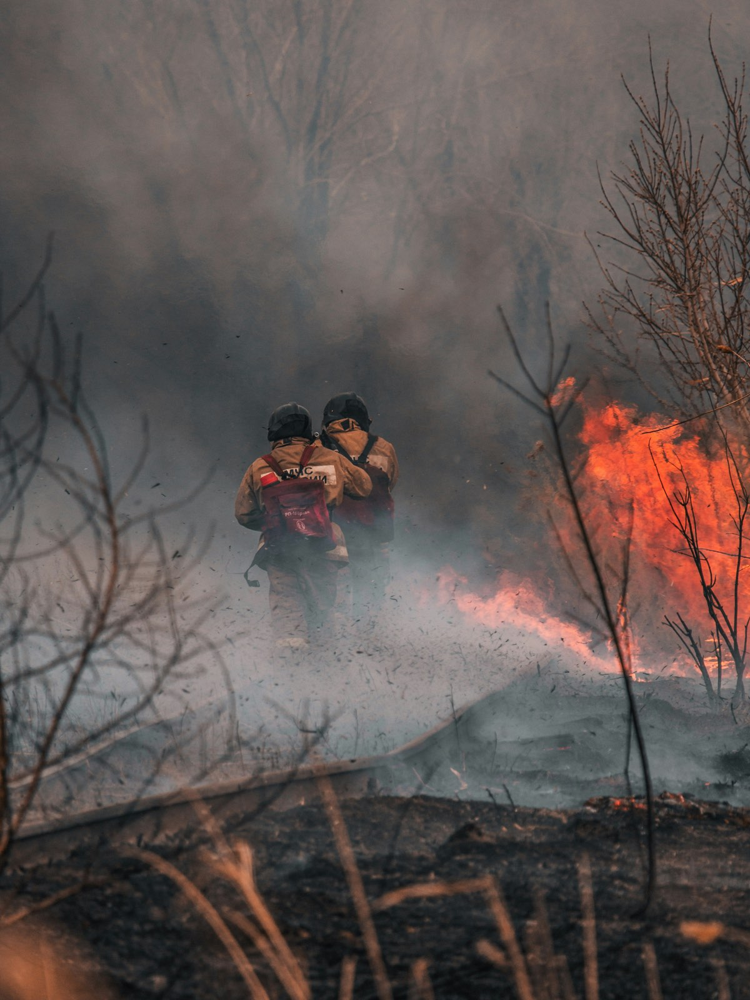
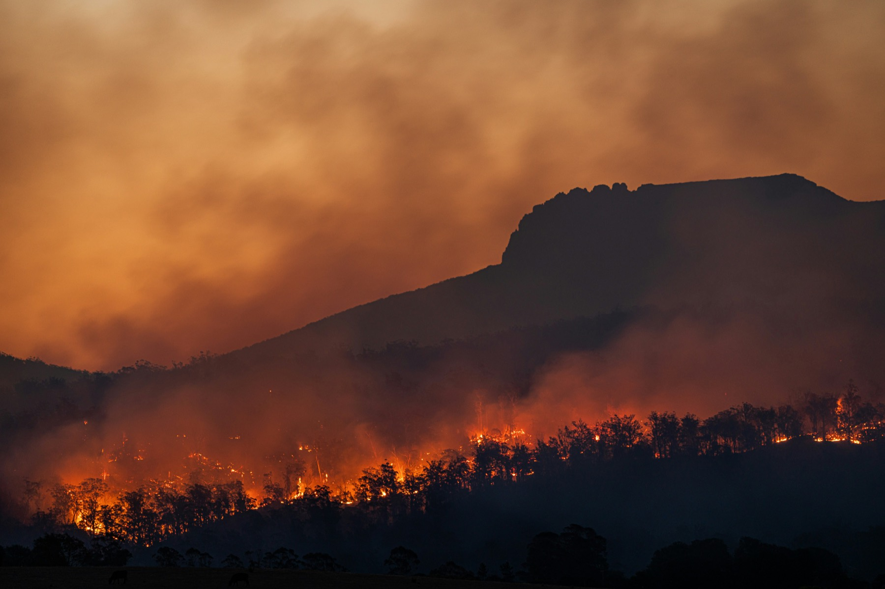

The context
470,000 wildfire incidents across the US in 2023
Here are all the wildfire incidents in the US in 2023 — burning through national forests, grasslands, coastal scrub and the edges of towns.
Each colour represents a different fire agency region, and the size of each mark relates to how many acres were burned.
Is it getting better?
Why it keeps growing
Wildfires are a growing crisis across North America
- Climate change Seasons that start earlier, run hotter and end later than the record was built to describe.
- Drought Moisture leaves the fuel before the season opens, so an ignition that once died now carries.
- Decades of fire suppression A century of putting fires out left forests dense with fuel that was never allowed to burn.
The figures, compiled from multiple federal and state agencies, may undercount the full scale of the crisis — and the gap is not evenly spread.
But, it’s getting better, right?
Unfortunately, in the years that we have been analysing the data, wildfire frequency and severity have continued to climb rather than level off.
The numbers in this chart are very large, but a total of 12 million acres burned is equivalent to the entire state of Maryland going up at once.

What now
It’s time to take action
Hold government agencies and policymakers accountable for wildfire prevention, for the completeness of what they file, and for the gaps they leave unmarked.
-
Ask an agency
Ten agencies publish a phone number and a street address. Ask them what is missing from their filing, and why.
Find an agency -
Check the method
Every figure here says where it came from, and every gap says that it is a gap rather than a zero.
Read the method -
Pass it on
The record only pressures anyone if people read it. Send this page to someone who files, or who votes.
Photograph by Matt Palmer on Unsplash. Used to illustrate; it is not a filed incident record.